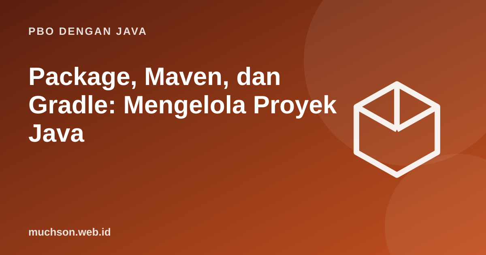

Beranda › Artikel › PBO dengan Java
PBO dengan JavaPackage, Maven, dan Gradle: Mengelola Proyek Java
Program sungguhan bukan satu berkas. Ia terdiri dari ratusan class yang dikelompokkan dalam package, bergantung pada pustaka luar, dan dibangun dengan alat otomatis. Memahami struktur ini mengubah Anda dari penulis skrip menjadi pengembang proyek.
Sebaiknya sudah paham: dasar Java, class dan interface

Setelah membaca dan mencoba materi ini, Anda mampu:
- mengelompokkan class dengan package dan memakai import
- mengikuti struktur direktori standar Maven/Gradle
- membaca pom.xml dan build.gradle dasar
- menjelaskan dependensi, repositori, dan versi
- membangun dan menjalankan proyek dari baris perintah
Package
Package adalah ruang nama yang mengelompokkan class terkait dan menghindari bentrok nama. Konvensi: nama domain terbalik, huruf kecil, misalnya id.web.muchson.perpustakaan.model.
// berkas: src/main/java/id/contoh/perpustakaan/model/Buku.java
package id.contoh.perpustakaan.model;
public record Buku(String isbn, String judul) { }
// berkas: src/main/java/id/contoh/perpustakaan/App.java
package id.contoh.perpustakaan;
import id.contoh.perpustakaan.model.Buku; // memakai class dari package lain
import java.util.List; // dari pustaka standar
public class App {
public static void main(String[] args) {
List<Buku> daftar = List.of(new Buku("111", "Algoritma"));
System.out.println(daftar);
}
}| Kata kunci | Fungsi |
|---|---|
| package x.y; | Menyatakan lokasi class (harus cocok dengan struktur folder) |
| import x.y.Kelas; | Memakai nama pendek untuk class dari package lain |
| import x.y.*; | Mengimpor seluruh package (kurang disarankan: kurang jelas) |
| import static ... | Mengimpor anggota static, misalnya Math.max |
Struktur proyek standar
proyek-perpustakaan/
├── pom.xml (Maven) atau build.gradle (Gradle)
├── src/
│ ├── main/
│ │ ├── java/id/contoh/perpustakaan/... kode produksi
│ │ └── resources/ berkas konfigurasi, templat
│ └── test/
│ └── java/id/contoh/perpustakaan/... kode tes (JUnit)
└── target/ atau build/ hasil build (jangan di-commit)Maven: pom.xml
<project xmlns="http://maven.apache.org/POM/4.0.0">
<modelVersion>4.0.0</modelVersion>
<groupId>id.contoh</groupId> <!-- organisasi -->
<artifactId>perpustakaan</artifactId> <!-- nama proyek -->
<version>1.0.0</version>
<properties>
<maven.compiler.release>21</maven.compiler.release>
<project.build.sourceEncoding>UTF-8</project.build.sourceEncoding>
</properties>
<dependencies>
<dependency> <!-- pustaka luar, diunduh otomatis dari Maven Central -->
<groupId>org.junit.jupiter</groupId>
<artifactId>junit-jupiter</artifactId>
<version>5.10.2</version>
<scope>test</scope> <!-- hanya untuk tes -->
</dependency>
</dependencies>
</project>mvn compile # mengompilasi
mvn test # menjalankan tes
mvn package # menghasilkan target/perpustakaan-1.0.0.jar
mvn clean # menghapus hasil buildGradle: build.gradle
plugins {
id 'java'
id 'application'
}
group = 'id.contoh'
version = '1.0.0'
repositories {
mavenCentral()
}
dependencies {
testImplementation 'org.junit.jupiter:junit-jupiter:5.10.2'
}
java { toolchain { languageVersion = JavaLanguageVersion.of(21) } }
application { mainClass = 'id.contoh.perpustakaan.App' }
tasks.test { useJUnitPlatform() }./gradlew build # kompilasi + tes + jar
./gradlew test
./gradlew run| Aspek | Maven | Gradle |
|---|---|---|
| Konfigurasi | XML deklaratif (pom.xml) | Skrip Groovy/Kotlin (lebih ringkas, lebih fleksibel) |
| Konvensi | Sangat kuat, seragam | Konvensi sama, mudah dikustomisasi |
| Kecepatan | Cukup | Umumnya lebih cepat berkat build inkremental dan cache |
| Dipakai di | Banyak proyek perusahaan dan Spring | Android dan banyak proyek modern |
Dependensi dan versi
- Koordinat: groupId : artifactId : version mengidentifikasi sebuah pustaka secara unik di repositori seperti Maven Central.
- Dependensi transitif: pustaka yang Anda pakai membawa pustakanya sendiri; alat build menyelesaikannya otomatis.
- Versi semantik (MAJOR.MINOR.PATCH): naik MAJOR berarti perubahan yang bisa merusak.
- Kunci versi: hindari rentang longgar seperti "latest" agar build dapat diulang.
- Keamanan: perbarui dependensi secara berkala; kerentanan sering berada di pustaka pihak ketiga.
Jangan meng-commit hasil build (target/, build/, *.class) ke Git. Tambahkan ke .gitignore. Yang disimpan di Git adalah kode sumber dan berkas konfigurasi build.
Modul Java (JPMS)
Sejak Java 9 tersedia sistem modul: berkas module-info.java menyatakan modul mana yang dibutuhkan dan package mana yang diekspor, sehingga detail internal benar-benar tersembunyi. Aplikasi biasa jarang memakainya, tetapi pustaka dan JDK sendiri disusun sebagai modul.
module id.contoh.perpustakaan {
requires java.logging; // modul yang dibutuhkan
exports id.contoh.perpustakaan.model; // hanya package ini terlihat dari luar
}1. Buat struktur folder untuk proyek bernama toko dengan package id.contoh.toko.
2. Mengapa import dengan tanda bintang kurang disarankan?
3. Apa bedanya jar biasa dan "fat jar"?
4. Mengapa dependensi test diberi scope test?
- Package mengelompokkan class; import memakai class dari package lain.
- Struktur src/main/java dan src/test/java adalah standar.
- Maven (XML) dan Gradle (skrip) mengelola kompilasi, tes, dan dependensi.
- Pahami koordinat, versi, dan dependensi transitif; jangan commit hasil build.
Tanya jawab
Pilih Maven atau Gradle?
Apa itu classpath?
Bagaimana menjalankan jar?
Referensi
- Apache Maven: Getting Started Guide
- Gradle: Building Java Applications
- Oracle: Packages (Java Tutorials)
- Maven Central Repository